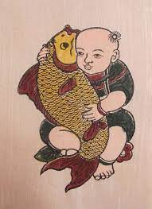
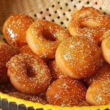

Khủng bố lái máy bay đâm thẳng vào tòa tháp đôi của Trung tâm Thương mại Quốc tế; một khu vực lớn trên mặt đất ngập lửa khói vì máy bay lao xuống. Dưới đây là hình ảnh các thảm họa hàng không từng xảy ra ở New York, Mỹ.
Trục vớt máy bay lao xuống sông
Máy bay chở hàng trăm khách khách lao xuống sông New York
Người hùng trong cú hạ cánh kỳ diệu ở New York
 Nếu muốn chèn lịch vào trang web , có cả âm lịch thì vào địa chỉ:
Một vị vua treo giải thưởng cho họa sĩ nào vẽ được một bức tranh đẹp nhất về sự bình yên.
Đây là một bài thơ thật kỳ lạ. Có đến 8 cách đọc khác nhau
 Khi chọn gạo, không nên mua loại gạo cũ, gạo mới làm món cơm chiên có mùi thơm và độ dẻo. Cơm chiên ngon phải được chiên trên cơm nấu thật ngon. Tức hạt cơm được nấu chín mềm, không nhão, không khô, có độ dẻo.